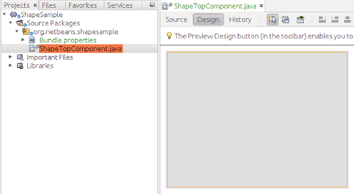
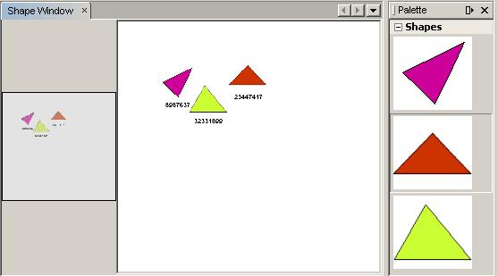

Apache NetBeans
Apache NetBeansLatest release
NetBeans Visual Library Tutorial
| This tutorial needs a review. You can edit it in GitHub following these contribution guidelines. |
In this tutorial, you will learn how to use the main features provided by the NetBeans Visual Library API. The library provides a set of reusable pieces, called "widgets". When you compose them together, you are able to create a visualization in a simple and flexible way. Each widget has, built into it, various properties, such as "layout", "border", and "actions". The set of predefined widgets provided by the library can be extended.
All the pluggable pieces are declared as interfaces or abstract classes, such as "WidgetAction", "Anchor", "AnchorShape", "PointShape", "Animator", "Border", "GraphLayout", "LookFeel", "Layout", "SceneLayout", "Router", and "CollisionsCollector".
In summary, the Visual Library API is a visualization API, useful in the context of modeling and graphing features.
Also, you will use 3 icons in the tutorial. You can right-click them here and save them locally, then copy them to the module project’s location, after you create the module project later in this tutorial. Here are the 3 icons:


All the information you need to know for working with the Visual Library API is collected at these two locations:
Setting Up the Module
In this section, we use wizards to create a module project and a custom window component.
-
Choose File > New Project (Ctrl+Shift+N). Under Categories, select NetBeans Modules. Under Projects, select Module. Click Next.
-
In the Name and Location panel, type
ShapeSamplein the Project Name field. Change the Project Location to any directory on your computer. Leave the Standalone Module option and Set as Main Project checkbox selected. Click Next.
1.
In the Basic Module Configuration panel, type org.netbeans.shapesample in Code Name Base. Click Finish.
The IDE creates the ShapeSample project. The project contains all of your sources and project metadata, such as the project’s Ant build script. The project opens in the IDE. You can view its logical structure in the Projects window (Ctrl+1) and its file structure in the Files window (Ctrl+2).
-
Right-click the module project, choose New > Other and choose Window from the Module Development category. Click Next. Choose
editorin the drop-down list and select Open on Application Start. Click Next.
1.
Type Shape in Class Name Prefix. Optionally, add an icon with a dimension of 16x16 pixels. Click Finish.
A Java class is created, named ShapeTopComponent . Open this file in "Design" mode. You should now see this:

-
Right-click the project, choose Properties, click Libraries in the Project Properties dialog box and declare a dependency on the Visual Library API.
| The Visual Library is not one of the modules included in a new NetBeans Platform application. To set a dependency on it in a new NetBeans Platform application, you first need to include it in the application. To do so, right-click the application, choose Properties, go to Libraries panel, expand 'platform', and at the end of the list select Visual Library. Then you can set a dependency on it in your module. |
Click OK.
Creating the Scene
Programming with the Visual Library API is similar to programming in Swing. You build and modify a tree of visual elements that are called "widgets". The root of the tree is represented by a Scene class which holds all the visual data of the scene. The scene is a widget. You have to create a scene view, which is a JComponent. You must then add the JComponent to a JScrollPane.
In this section, we add a JScrollPane to our TopComponent. Then we create a new scene. Next, we pass the scene view to the TopComponent, so that it can be displayed in the TopComponent’s JScrollPane. We then install the module project and display our first scene.
-
In the
org.netbeans.shapesamplepackage, create a Java class calledGraphSceneImpl. Let the class extendGraphScene.
A red error underline and a lightbulb appears. Let the IDE generate the import statement.
A red error underline and a lightbulb appears again. Let the IDE generate the class’s abstract methods.
-
Create a dummy implementation of the class by adding meaningful identifiers and setting
nullto be returned where necessary, so that all of the class’s requirements are fulfilled:
public class GraphSceneImpl extends GraphScene {
public GraphSceneImpl() {
}
@Override
protected Widget attachNodeWidget(Object node) {
return null;
}
@Override
protected Widget attachEdgeWidget(Object edge) {
return null;
}
@Override
protected void attachEdgeSourceAnchor(Object edge, Object oldSourceNode, Object newSourceNode) {
}
@Override
protected void attachEdgeTargetAnchor(Object edge, Object oldTargetNode, Object newTargetNode) {
}
}-
Now use the TopComponent’s constructor to hold an instance of the
GraphSceneImplclass. To do so, add the following to the end of theShapeTopComponentclass’s constructor:
setLayout(new BorderLayout());
GraphSceneImpl scene = new GraphSceneImpl();
JScrollPane shapePane = new JScrollPane();
shapePane.setViewportView(scene.createView());
add(shapePane, BorderLayout.CENTER);
add(scene.createSatelliteView(), BorderLayout.WEST);Notice that we are creating two views. The first will be a large view for visualization of your graphs or models, and so on. The second is a satellite view, which we have placed in the WEST (i.e., the left side) of the TopComponent. This will let the user navigate quickly across the view and gives an overview of the entire scene.
-
Right-click the project node and choose "Run".
A new instance of the application starts up. When the module installs, look under the Window menu and you will find a new menu item called "Shape", at the top of the list of menu items. Choose it and you will see the start of your Visual Library API implementation:

Creating a Component Palette for the Scene
To do something useful with the Visual Library API, we will implement the Palette API so that we end up with a Component Palette containing the shapes shown at the start of this tutorial. Later, we will add the Visual Library API’s drag and drop functionality so that we can drag and drop the shapes into the scene. After that, we will be able to enrich the scene with additional features, such as the ability to zoom and pan in the scene.
-
Since the focus of this tutorial is the Visual Library API, and not the Palette API, no time will be spent here explaining how the Palette API works. Many tutorials exist on this subject already ( here). Therefore, you can simply copy and paste the following files into a new package called
org.netbeans.shapesample.palette:
-
In the same way as explained in step 3 of the section called "Getting Started", earlier in this tutorial, add dependencies on the Actions API, Nodes API, and Common Palette API.
-
Next, add the palette to the TopComponent’s Lookup, by adding this line to the end of the TopComponent’s constructor:
associateLookup( Lookups.singleton(PaletteSupport.createPalette() ));-
The IDE will prompt you to insert import statements for
org.openide.util.lookup.Lookupsandorg.netbeans.shapesample.palette.PaletteSupport. Accept the prompts and let the IDE generate the import statements.
1.
Place the images found at the start of this tutorial into the org.netbeans.shapesample.palette package. The Projects window should now look as follows:
-
Install the module again. The new Component Palette is shown to the right of the scene:

When you try to drag and drop a widget onto the scene, nothing happens because you need a LayerWidget on which you will be able to drop your widgets. You will be shown how to do so in the next section.
Adding a LayerWidget
A LayerWidget represents a glasspane, similar to JGlassPane in Swing. It is transparent by default. So, before we go any further, we will add a LayerWidget to the scene, so that we have somewhere to place the visible widgets that we will drag and drop onto the scene.
-
In the
GraphSceneImplclass, declare the LayerWidget:
private LayerWidget mainLayer;-
In the
GraphSceneImplclass’s constructor, add the LayerWidget as a child of the scene:
mainLayer = new LayerWidget (this);
addChild (mainLayer);Now, when we drag and drop items from the palette as widgets to the scene, we will add them as children of the LayerWidget. Because LayerWidgets are transparent by default, you could have various LayerWidgets transparently on top of each other so that, for example, you can add a background image to the scene.
For details, see LayerWidget in the Javadoc.
Adding an IconNodeWidget via Drag and Drop Functionality
Earlier, we used the GraphSceneImpl class’s constructor to pass a scene to the TopComponent’s JScrollPane. So far, the scene exists but has no behavior. Behavior is added through actions. The action that we will look at in this section is called AcceptAction . This action enables drag and drop functionality. The drag and drop functionality could be applied to a widget, but here we apply it to the scene itself.
We use createAcceptAction to specify what should happen when an item from the palette is dragged over the scene. Two methods are involved here. The first, isAcceptable() , is used to determine whether the item is acceptable to the scene. Here you can test the item, by using the transferable. You can also set the drag image, which is all that we do in the implementation below. If true is returned, the accept method is called. Here we get the image from the transferable, using the same helper method as before. Then we call the addNode method, instantiating a new IconNodeWidget and passing the image retrieved from the transferable.
All the code in this section is interrelated, and you will receive red error underlines in your code until all the methods below have been added, but we will try to add everything in some kind of logical order anyway!
-
First, add the
createAcceptAction, with its two methods, to theGraphSceneImplclass’s constructor:
getActions().addAction(ActionFactory.createAcceptAction(new AcceptProvider() {
@Override
public ConnectorState isAcceptable(Widget widget, Point point, Transferable transferable) {
Image dragImage = getImageFromTransferable(transferable);
JComponent view = getView();
Graphics2D g2 = (Graphics2D) view.getGraphics();
Rectangle visRect = view.getVisibleRect();
view.paintImmediately(visRect.x, visRect.y, visRect.width, visRect.height);
g2.drawImage(dragImage,
AffineTransform.getTranslateInstance(point.getLocation().getX(),
point.getLocation().getY()),
null);
return ConnectorState.ACCEPT;
}
@Override
public void accept(Widget widget, Point point, Transferable transferable) {
Image image = getImageFromTransferable(transferable);
Widget w = GraphSceneImpl.this.addNode(new MyNode(image));
w.setPreferredLocation(widget.convertLocalToScene(point));
}
}));| After you add the above code, some red underlines will remain, denoting that there are errors. These errors are because the code above refers to a method and a class that you have not yet created. You will create them in the next steps. |
-
Next, in the
GraphSceneImplclass, add a helper method for retrieving the image from the transferable:
private Image getImageFromTransferable(Transferable transferable) {
Object o = null;
try {
o = transferable.getTransferData(DataFlavor.imageFlavor);
} catch (IOException ex) {
} catch (UnsupportedFlavorException ex) {
}
return o instanceof Image ? (Image) o : ImageUtilities.loadImage("org/netbeans/shapesample/palette/shape1.png");
}
You can define any kind of image when an image is not successfully returned from this helper method. For now we will use the " shape1.png " image instead.
|
-
Create a new class called
MyNode. This class represents a node in a graph-oriented model. It cannot be an image directly, since each node has to be unique (checked by "equals" method) in the model. If you would use the images directly, then you would be able to have only 3 nodes (one for each image) in the scene. Using the MyNode class, you can have multiple nodes and each node can have its own or a shared image instance.
public class MyNode {
private Image image;
public MyNode(Image image) {
this.image = image;
}
public Image getImage() {
return image;
}
}-
Change the signature of the
GraphSceneImplclass to the following, so that the node is received by the Visual Library implementation class:
extends GraphScene<MyNode, String>You must let the IDE generate new stubs for the abstract methods.
-
Finally, define the new widget in the
GraphSceneImplclass. This method is called automatically by theacceptmethod. Use it to define a Visual Library widget when the palette item is dropped.
@Override
protected Widget attachNodeWidget(MyNode node) {
IconNodeWidget widget = new IconNodeWidget(this);
widget.setImage(node.getImage());
widget.setLabel(Long.toString(node.hashCode()));
widget.getActions().addAction(ActionFactory.createMoveAction());
mainLayer.addChild(widget);
return widget;
}Notice that we set the image retrieved from the node. We also generate a random number so that we have a label. By default, the widget exists but has no behavior. Here, we create a move action, so that the widget can be moved in the scene. Finally, before returning the widget to the scene, we add it as a child to the LayerWidget that we created in the previous section.
-
Run the module and open the Shape window again.
Now you can drag and drop items from the palette. As you drag an item over the scene, you will see the drag image. When you drop an item, it becomes a widget and is visible within the scene as well as within the satellite view, as you can see here:

Adding Functionality to the Scene
In the previous section, we added AcceptAction to the scene. We had to define two methods to specify whether the item should be dropped and for resolving the item. In this section, we use ZoomAction , to add zoom/unzoom functionality to the scene.
-
At the end of the
GraphSceneImplclass’s constructor, add this line:
getActions().addAction(ActionFactory.createZoomAction());-
Install the module again.
1. While holding CTRL key, use the mouse wheel to zoom in and out of the scene:

| The shapes are rendered as images. SVG is currently not supported. |
In the same way as described above, you can add Pan functionality to the scene, by means of this line:
getActions().addAction(ActionFactory.createPanAction());When you add this line, the user will be able to hold down the mouse wheel and then scroll in any direction in the scene.
Adding Functionality to the IconNodeWidget
Earlier we added MoveAction to the IconNodeWidget, to enable move behavior for the widget. In the same way, a lot of other behavior can be added to the widget. In this section, we add HoverAction , SelectAction , and InplaceEditorAction .
The InplaceEditorAction will let the user change the label:

The SelectAction will change the color of the label when the widget is selected, while the HoverAction will change the color of the label when the mouse hovers over the widget:
-
First define the editor action that we will add to the IconNodeWidget:
private WidgetAction editorAction = ActionFactory.createInplaceEditorAction(new LabelTextFieldEditor());-
Now define the
LabelTextFieldEditor, as follows:
private class LabelTextFieldEditor implements TextFieldInplaceEditor {
public boolean isEnabled(Widget widget) {
return true;
}
public String getText(Widget widget) {
return ((LabelWidget) widget).getLabel();
}
public void setText(Widget widget, String text) {
((LabelWidget) widget).setLabel(text);
}
}-
Finally, assign the editor action to the IconNodeWidget, in the same way as done for the move action earlier:
widget.getLabelWidget().getActions().addAction(editorAction);Here, we first get the IconNodeWidget’s LabelWidget. Then we add the editor action to the LabelWidget.
-
The IDE will prompt you to add several import statements. In each case, accept the suggestion offered by the IDE.
-
Next, in the case of
SelectActionandHoverAction, you need do nothing more than assign these actions to the IconNodeWidget:
widget.getActions().addAction(createSelectAction());
widget.getActions().addAction(createObjectHoverAction());-
Next, you need to think about the order of the actions that you have created. For details, see the Order of Actions section in the documentation. After you have reordered the actions, the
attachNodeWidgetshould look as follows:
protected Widget attachNodeWidget(MyNode node) {
IconNodeWidget widget = new IconNodeWidget(this);
widget.setImage(node.getImage());
widget.setLabel(Long.toString(node.hashCode()));
//double-click, the event is consumed while double-clicking only:
widget.getLabelWidget().getActions().addAction(editorAction);
//single-click, the event is not consumed:
widget.getActions().addAction(createSelectAction());
//mouse-dragged, the event is consumed while mouse is dragged:
widget.getActions().addAction(ActionFactory.createMoveAction());
//mouse-over, the event is consumed while the mouse is over the widget:
widget.getActions().addAction(createObjectHoverAction());
mainLayer.addChild(widget);
return widget;
}-
Install and try out the module again. As shown at the start of this section, when you hover over a widget’s label, or when you select it, its color will change. Also, when you click on a label, you are able to edit its content.
Congratulations, you have completed your first Visual Library scene.